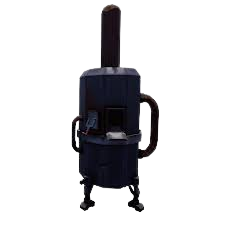
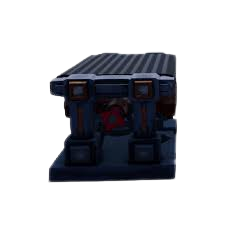
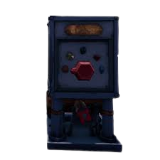
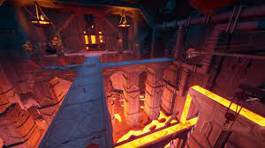

5.Hydroneer
hydroneer est un de mes jeux préférer,de plus la version 2.0 est sortis récemment.
le but du jeux est simple, miner pour récuperer de l'or/fer/cloutium/gem/crystaux
pour les vendre ou fabriquer des objet + cher.
le jeux est trés long si on n'automatise pas la production grace a des machinne.



grace aux machines ci-dessus, on peut créer des farm immensse.
il existe une partie "logique" permet l'automatisation total.

La 2.0 !
La V2 de hydroneer est la plus grosse maj du jeu.
elle rajoute des centaine de bloc, de nouvelle mécanique et du multi.
Une des chose qui a le plus changé l'obtention de plusieur foreuse.
en effet on ne peut que acheter un(e) foreuse/broyeur.
le reste doit etre craft à la forge contre des ressources:

300 de fer pour la foreuse T1 et 1000 fer+ 300 cloutium pour la T2
la foreuse T2 peut creusé la terre T2 (donc va + plus profond et donne +de ressource)
Le camion est maintenant stable, en effet avant il avait tendance a s'envoler (avec vos 4h de farm)
Le systeme de tuyeau est maintenant + simple On place un tuyeau puis se qu'on veut mettre dessus(convoyeur..ect).
Mes projets:
avec dylan (mon acolite) , nous allons construire un chateau et une farm
dans la parcelle sous terraine. ansi que devenir milliardaire !